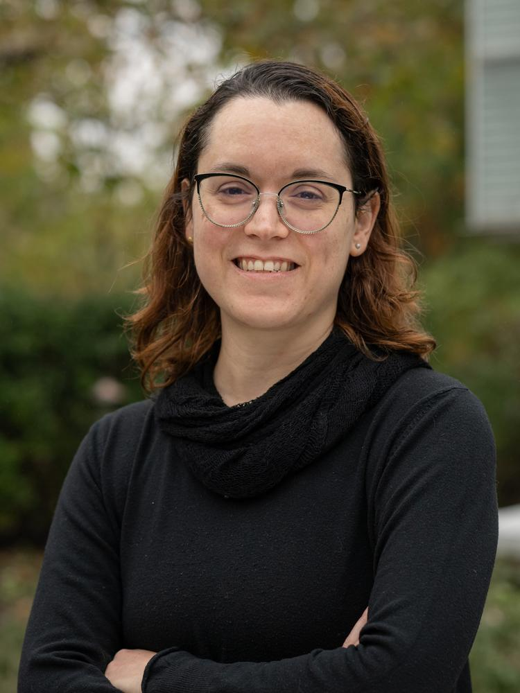
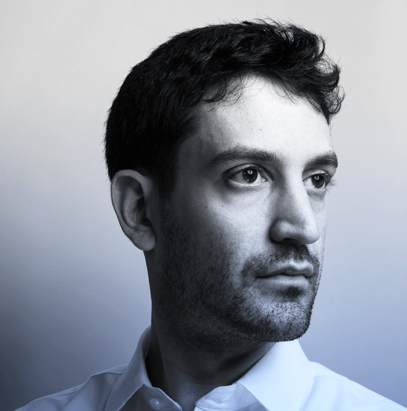
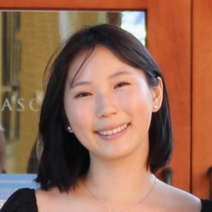
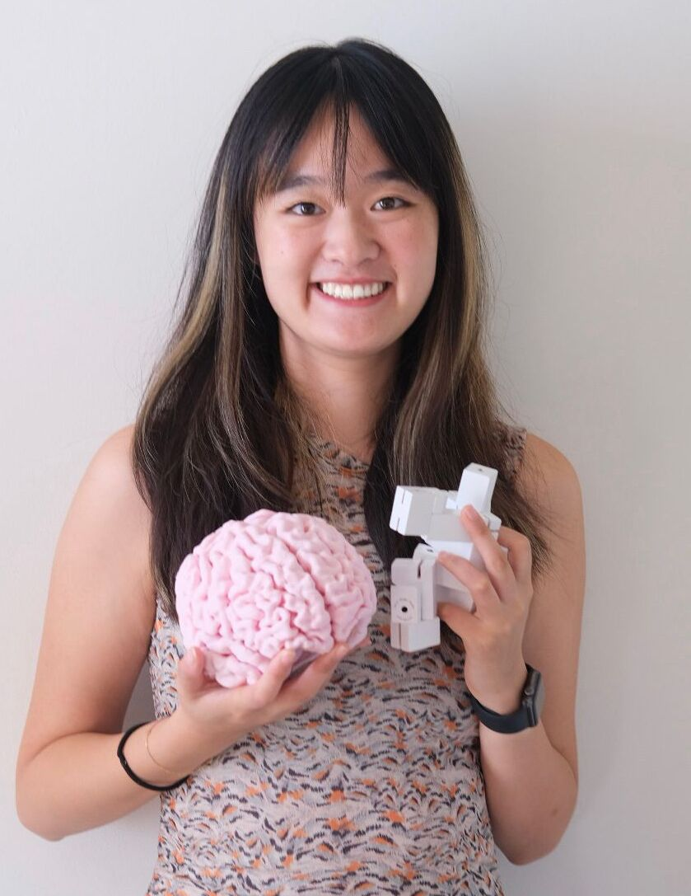

About
A central goal of cognitive computational neuroscience is to understand how structured neural and behavioral representations emerge from everyday, real-world experience. Yet most current models are trained and evaluated on curated datasets — collections of images, videos, and text disconnected from the temporal and embodied nature of how we actually experience the world.
Models trained on curated datasets achieve striking accuracy in predicting neural and behavioral responses to other curated datasets, but they often fail when asked to learn from, or generalize to, more naturalistic data. This satellite event highlights new methods for characterizing the learning environment available to young children, and new modeling approaches that can learn from these messy yet structured data.
This workshop will explore the idea that moving beyond curated datasets is essential to improve our understanding of human learning.
What to expect
Talks from researchers
Five 25+5 min keynote talks bringing together researchers from developmental psychology, AI, and machine learning. Talks introduce work using infant egocentric video to characterize early learning and computational approaches for training models on such data, alongside the practical challenges of doing both.
Lightning talks & discussion
Four emerging-research lightning talks showcase new work, followed by a closing moderated discussion on open questions: What makes naturalistic data fundamentally different from curated datasets? How do we collect rigorous and ethical egocentric data from a child's perspective? What challenges arise when training models on developmental data?
Learning goals
- Understand the limitations of curated datasets for modeling human learning.
- Gain familiarity with emerging naturalistic datasets and modeling approaches.
- Identify opportunities for cross-disciplinary collaboration on developmental data.
Confirmed speakers
Researchers working at the intersection of developmental science and machine learning.
 BL
BLBria Long
Assistant Professor, Psychology
UC San Diego

HRHadas Raviv
CV Starr Research Scholar, Neuroscience
Princeton University

BLBrenden Lake
Associate Professor, Computer Science & Psychology
Princeton University
 BG
BGBoqing Gong
Assistant Professor & Research Scientist
Boston University / Google
 DY
DYDaniel L.K. Yamins
Professor, Computer Science & Psychology
Stanford University
Emerging research — lightning talks
 JY
JYJane Yang
PhD Student, Psychology
UC San Diego

EIElizabeth Im
PhD Student, Psychology
Stanford University
Alvin Tan
PhD Student, Psychology
Stanford University

DDDota Dong
PhD Researcher, Psycholinguistics
Max Planck Institute
Organizers
Drawn from four institutions, spanning computer science, developmental science, psychology, and cognitive neuroscience.
 CO
COClíona O'Doherty
Postdoctoral Researcher · Moderator
Stanford University
 CE
CECameron T. Ellis
Assistant Professor, Psychology
Stanford University
 MF
MFMichael C. Frank
Professor, Psychology
Stanford University
JYJane Yang
PhD Student, Psychology
UC San Diego
 KA
KAKaren Adolph
Professor, Psychology & Neural Science
New York University
Schedule
A half-day workshop with five keynote talks across developmental science and AI, four emerging-research lightning talks, and a closing moderated discussion. Final room TBD — see the CCN 2026 program.
-
1:00 – 1:05
Welcome and opening
-
1:05 – 1:35
Constraints on theories of visual learning from children's everyday experience
-
1:35 – 2:05
The First 1000 Days (1kD): Modeling Language Acquisition using Continuous Child-Centered Experience
-
2:05 – 2:35
Learning through the eyes and ears of a child
-
2:35 – 3:00
Break
-
3:00 – 3:30
BabyVLM-V2 and the Sense of Touch for Visual Learning from The Child's View
-
3:30 – 4:20
Emerging research — lightning talks
-
4:20 – 4:30
Break
-
4:30 – 5:00
Zero-Shot World Models are Developmentally Efficient Learners
-
5:00 – 5:10
Drink & snack break
-
5:10 – 5:45
Closing Q&A and moderated discussion
Talk titles and speaker line-up are tentative and may be updated closer to the event.
The data
A glimpse of what developmental egocentric data looks like: head-mounted, high-resolution cameras and the video they produce — adult faces, objects in hand, environments traversed.


The infant view


Relevant papers from speakers and organizers


Attending
The event is open to all CCN 2026 attendees. We expect 50–80 participants and will keep the session accessible to a broad audience — talks emphasize conceptual insights and intuitive explanations, with familiarity with technical details helpful but not required.
The event is particularly relevant for researchers in machine learning, cognitive science, and neuroscience curious about how developmental perspectives can inform computational models. We strongly encourage questions from trainees and non-experts throughout the session.
When: Sunday, August 2, 2026 (the day before CCN 2026 begins)
Where: Hess Center for Science and Medicine, New York City
To attend the event: